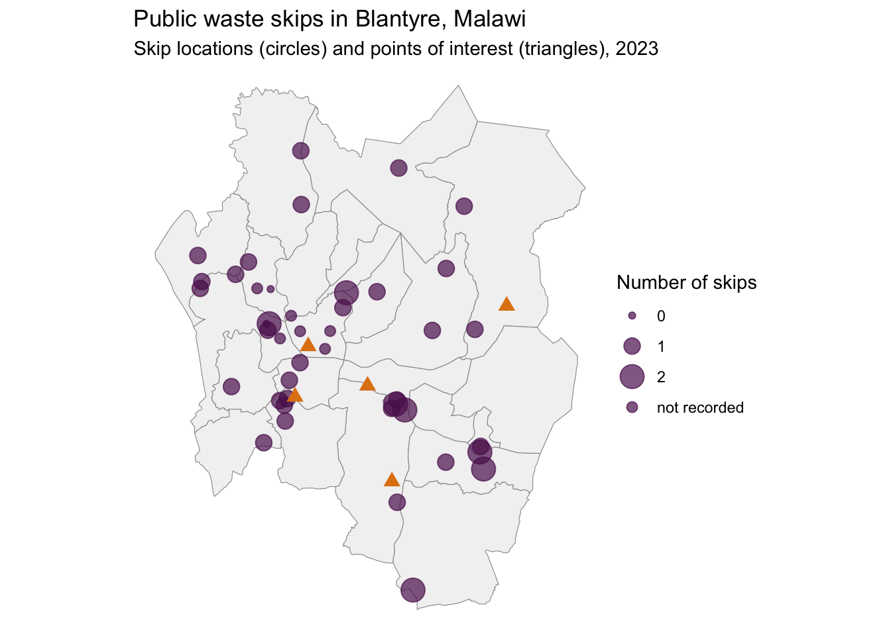

The goal of wasteskipsblantyre is to provide data for research and planning of solid waste management in Blantyre, Malawi. The package contains two datasets: skips holds the locations of the publicly accessible waste skips in the city, with the number of skips, access and the fill-up times reported at each location, and poi holds the points of interest for collecting the waste from the skips. The data were updated in 2023 and replace the 2021 dataset wasteskipsblantyre of earlier versions.

Installation
You can install the development version of wasteskipsblantyre from GitHub with:
# install.packages("devtools")
devtools::install_github("openwashdata/wasteskipsblantyre")Alternatively, you can download the individual datasets as a CSV or XLSX file from the table below.
| dataset | CSV | XLSX |
|---|---|---|
| skips | Download CSV | Download XLSX |
| poi | Download CSV | Download XLSX |
Project goal
Data on the location of public waste skips in Blantyre was not available. Without such data, it becomes difficult to develop a solid waste management plan and logistics. The goal of this project was to identify the locations of public waste skips in Blantyre, Malawi, and to record how they are used.
Data
The package provides access to the locations of the publicly accessible waste skips in Blantyre, Malawi, and to the points of interest for their collection.
skips
The skips dataset has 13 variables and 67 observations. 47 rows are named skip locations, 43 of them with coordinates. The last 20 rows have no name, no location and no other values; they carry only the constant capacity of 7000 litres per skip (see issue #11). For an overview of the variable names, see the following table.
skips| variable_name | variable_type | description |
|---|---|---|
| name | character | Main name of skip location. |
| name_other | character | Alternative names of skip location separated by commas. |
| supervision_area | character | Cleansing supervision area. |
| context | character | Type of urban environment surrounding skip location. |
| direct_access | character | Vehicle access path type. |
| fillup | double | Number of days to fill up according to person surveyed. |
| fillup_dry | double | Number of days to fill up in dry season according to person surveyed. |
| fillup_rainy | double | Number of days to fill up in rainy season according to person surveyed. |
| number_skips | double | Number of skips at skip location. |
| capacity | double | Capacity of one skip in litres. |
| y | double | Y (latitude) coordinate in WGS 84. |
| x | double | X (longitude) coordinate in WGS 84. |
| notes | character | Notes relating to skip location. |
poi
The poi dataset has 3 variables and 5 observations: the depot, the Mzedi dump site, the compost site and two gas stations. For an overview of the variable names, see the following table.
poi| variable_name | variable_type | description |
|---|---|---|
| poi | character | Point of interest. |
| lat | double | Y (latitude) coordinate in WGS 84. |
| long | double | X (longitude) coordinate in WGS 84. |
Example
The code below is an example which shows how you could use the data to prepare an interactive map in R. Find more examples in the prepared examples article.
library(wasteskipsblantyre)
library(dplyr)
library(sf)
library(tmap)
# read the skip locations with coordinates into a simple feature
sf_skips <- skips |>
filter(!is.na(x), !is.na(y)) |>
st_as_sf(coords = c("x", "y"), crs = 4326)
# set mapping mode to interactive ("view")
tmap_mode("view")
# create an interactive map
qtm(sf_skips)License
Data are available as CC-BY.
Citation
Please cite using:
citation("wasteskipsblantyre")
#> To cite package 'wasteskipsblantyre' in publications use:
#>
#> Yesaya M, Msuku L, Schöbitz L, Tilley E, Loos S, Seemann-Ricard N
#> (????). "wasteskipsblantyre: Locations of Public Waste Skips in
#> Blantyre, Malawi." doi:10.5281/zenodo.6470364
#> <https://doi.org/10.5281/zenodo.6470364>.
#> <https://openwashdata.github.io/wasteskipsblantyre/>.
#>
#> A BibTeX entry for LaTeX users is
#>
#> @Misc{yesaya_etall,
#> title = {wasteskipsblantyre: Locations of Public Waste Skips in Blantyre, Malawi},
#> author = {Mabvuto Yesaya and Limbani Msuku and Lars Schöbitz and Elizabeth Tilley and Sebastian Camilo Loos and Nicolas Seemann-Ricard},
#> doi = {10.5281/zenodo.6470364},
#> url = {https://openwashdata.github.io/wasteskipsblantyre/},
#> abstract = {An R data package containing the locations of public waste skips in Blantyre, Malawi, updated in 2023, with the number of skips, vehicle access and the fill-up times reported at each location, and the points of interest for their collection (depot, dump site, compost site and gas stations).},
#> keywords = {open data,washdata,solid waste,waste skips,waste collection,Blantyre,Malawi,data-visualization,geolocation,malawi,open-data,open-datasets,r,solid-waste,waste-management},
#> version = {0.1.0},
#> }